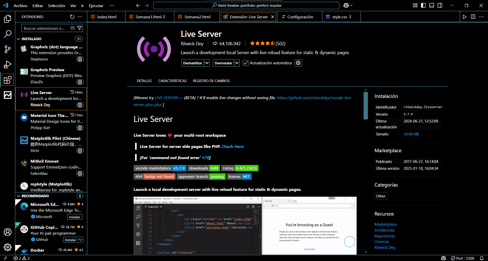

Semana 2
Visual Studio Code y Emmet
Exploramos las herramientas esenciales del editor VSCode, la paleta de comandos, terminal y Emmet para un desarrollo ágil.

Exploramos las herramientas esenciales del editor VSCode, la paleta de comandos, terminal y Emmet para un desarrollo ágil.
Esta semana nos enfocamos en dominar Visual Studio Code, el editor más usado para desarrollo web, desde su instalación hasta el uso de extensiones y atajos con Emmet.
Ctrl + Shift + P para acceso rápido.

div.container>ul>li.item*5m10+p20 para márgenes y paddings.Ctrl + Alt + → entre elementos.Configuración de VSCode
Uso de la Paleta de Comandos

Aprendí a utilizar Visual Studio Code de forma eficiente, dominando sus funciones principales como la terminal, comandos rápidos y personalización. También usé Emmet para acelerar el desarrollo escribiendo estructuras complejas de HTML y CSS en segundos.
Aprendí mediante tutoriales guiados, ejercicios prácticos con plantillas reales y explorando las funciones directamente dentro del entorno de desarrollo. La práctica con Emmet fue clave para comprender su utilidad en proyectos reales.